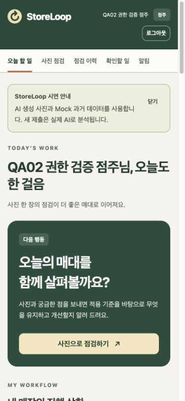
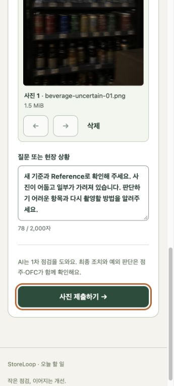
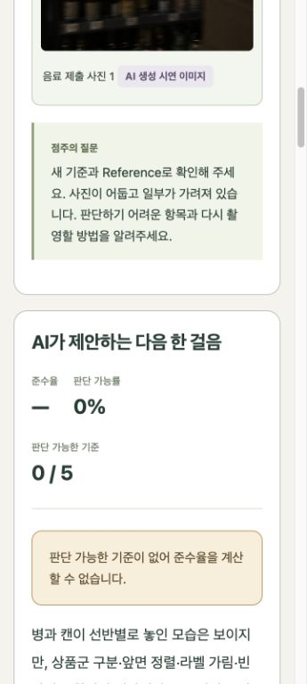
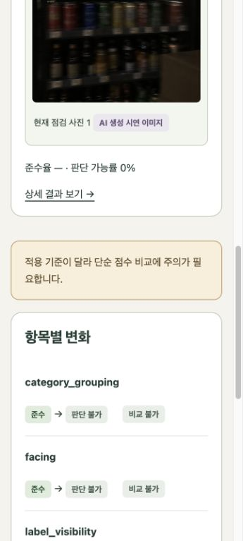
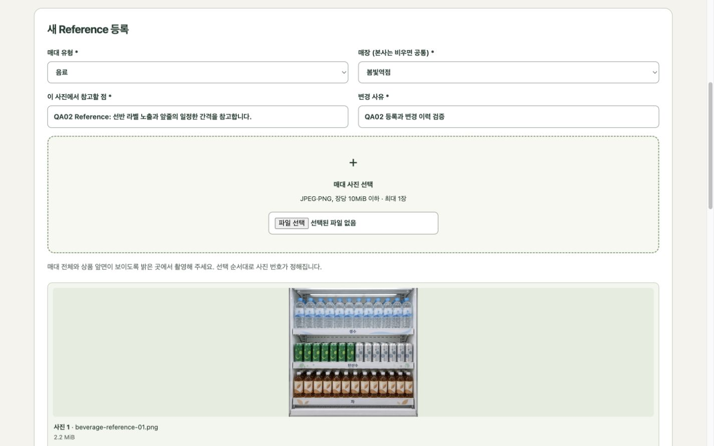
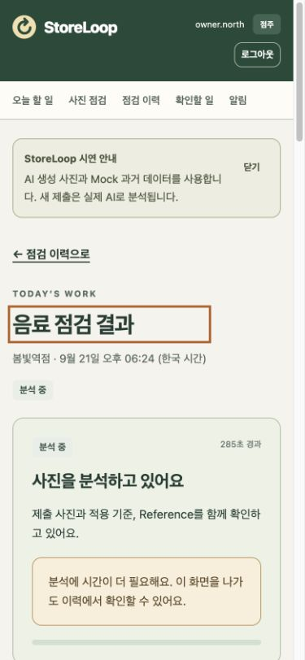
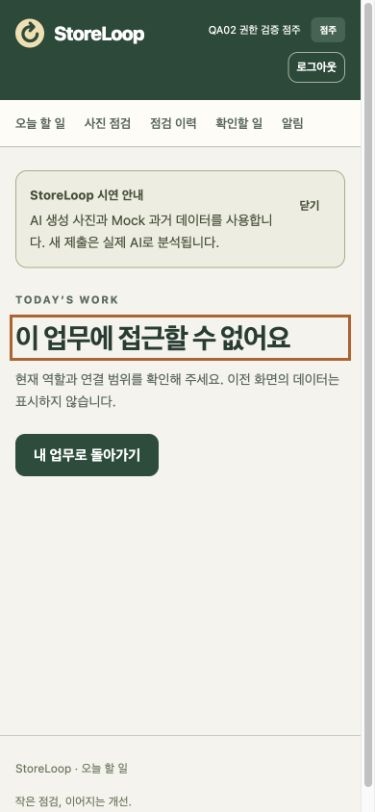

01준비와 로그인
로컬 서비스가 실행된 컴퓨터에서 http://127.0.0.1:5182를 엽니다. 로그인 후 역할에 맞는 시작 화면으로 이동합니다. 이 HTML과 화면 이미지는 인터넷 연결 없이 읽을 수 있습니다. 앱 이용과 새 AI 분석에는 실행 중인 서비스와 현재 Codex 로그인 연결이 필요합니다.
실행 담당자를 위한 시작 명령
Python 3.11 이상, Node 22.12 이상, npm 10 이상, PostgreSQL 14 이상과 이미지·JSON Schema를 지원하는 Codex CLI가 필요합니다. 처음 준비할 때는 패키지 다운로드가 필요하며, setup.sh가 버전 확인·로컬 설정·의존성·전용 DB와 합성 시드를 준비합니다. 자세한 환경 구성은 전체 실행 안내를 따르세요.
cd /path/to/hack2026/project
./scripts/setup.sh
./scripts/start.sh --concept 2실행을 끝낼 때
./scripts/stop.sh는 관리 프로세스에 종료를 요청하고 즉시 반환합니다. 반환만으로 worker가 끝났다고 판단하지 마세요. DB도 중지하려면 stop 실행 전에 관리 PID를 기록하는 프로세스와 DB 종료 절차를 따라 stop.sh → 기록한 프로세스의 종료 확인 → ./scripts/db.sh stop 순서로 진행합니다. 종료 확인이 시간 초과되면 DB를 유지합니다.
별도 터미널에서 띄운 서버는 그 터미널에서 Ctrl+C를 누르고 프롬프트 복귀를 확인합니다. 분석 중인 worker를 먼저 종료 요청했다면 처리가 끝날 때까지 API·AI·DB를 유지합니다. 이미 stop을 실행해 PID 기록이 없으면 실행 터미널과 프로세스 소유자를 확인한 뒤 DB를 중지합니다.
시연 계정의 비밀번호는 프로젝트의 사용자 전용 파일 .local/demo-credentials에서 확인합니다. 비밀번호를 매뉴얼에 고정하지 않습니다. 이 파일은 JSON이며 아래 로그인 ID에 해당하는 값을 사용합니다.
| 역할 | 시연 로그인 ID | 기본 확인 범위 |
|---|---|---|
| 점주 | owner.northowner.south | 연결된 매장 |
| OFC | ofc.northofc.south | 현재 담당 매장 |
| 지역 관리자 | regional.northregional.south | 소속 지역 매장 |
| 본사 | hq.demo | 전체 영업 범위 |
| 플랫폼 운영자 | operator.demo | 계정·연결·기준 정보·처리 상태 |
모든 계정·매장·판매 수치는 합성 시연 자료입니다. owner.inactive는 비활성 경계, owner.unmapped는 연결 누락 경계 확인용입니다. 일반 시연은 owner.north에서 시작하세요.
02역할별 시작 위치와 메뉴
| 역할·시작 경로 | 상단 메뉴 | 먼저 볼 것 |
|---|---|---|
점주/store-owner | 오늘 할 일 · 사진 점검 · 점검 이력 · 확인할 일 · 알림 | “사진으로 점검하기”와 내 매장의 진행 상황 |
OFC·지역·본사/ofc-admin | 오늘 할 일 · 담당 매장 · 점검 이력 · 조치 관리 · 진열 기준 · Reference · 추이와 분석 · 알림 | 먼저 검토해요 → 함께 조치해요 → 변화를 확인해요 |
플랫폼 운영자/platform-admin | 복구 할 일 · 계정과 연결 · 기준 정보 · 처리 작업 · 변경 이력 · 운영 공지 | 실패 작업 복구 · 이용 연결 정정 · 서비스 확인 |
OFC·지역·본사는 같은 영업 화면을 사용하지만 조회·변경 범위가 다릅니다. 본사 기준은 본사, 지역 기준은 해당 지역 관리자와 본사, 담당 매장 기준과 Reference는 허용된 영업 관리자에게 제공됩니다.
플랫폼 운영자는 영업 관리자가 아닙니다. 운영 화면에서는 점주의 사진·질문·AI 평가 본문이나 영업 알림을 열 수 없습니다. 모든 역할은 유효한 운영 공지를 볼 수 있습니다.
다른 역할로 시연할 때는 화면 오른쪽 위 로그아웃 후 해당 계정으로 로그인합니다. 직접 주소를 입력해도 현재 역할과 담당 범위가 재검증됩니다.
{kind=link}

03사진으로 점검하기
점주 · 사진 점검 · /store-owner/submit
- 점검할 매장과 매대 유형을 선택합니다.
“오늘 할 일”에서 “사진으로 점검하기”를 누르거나 상단 “사진 점검”을 엽니다. “어디를 점검할까요?”에서 매장과 음료·스낵 등 매대 유형을 선택합니다.
- 실제 사진 파일을 선택합니다.
“매대 사진 선택”에서 JPEG 또는 PNG를 1~5장 추가합니다. 장당 10MiB 이하입니다. 매대 전체와 상품 앞면이 보이도록 촬영하세요. 미리보기 아래 순서 이동과 삭제로 제출 사진을 정리합니다. 선택한 순서가 결과의 사진 번호입니다.
- 궁금한 점을 적습니다.
“질문 또는 현장 상황”은 최대 2,000자입니다. 예: “중간 선반의 빈 공간과 앞줄을 어떻게 정리하면 좋을까요?” 구체적으로 물으면 사진과 적용 기준을 연결한 답을 확인하기 쉽습니다.
- “사진 제출하기”를 누릅니다.
접수되면 점검 결과 화면으로 이동합니다. 대기·분석 중·완료 상태를 확인하고, 시간이 걸리면 나중에 “점검 이력”에서 같은 제출을 다시 엽니다.
연결된 매장이 없으면 운영자에게 매장 연결을 요청하세요. 입력 오류가 표시되면 사진·질문을 확인한 뒤 해당 항목을 수정합니다. 요청이 진행 중일 때 같은 사진을 여러 번 새로 제출하지 마세요.
{kind=link}

04결과를 읽고 개선 후 다시 제출하기
점주 · 점검 이력 → 점검 결과
결과 화면은 제출 사진 → AI가 제안하는 다음 한 걸음 → 기준별 근거와 개선 행동 → Reference와 비교 → 다음 행동 → 적용 기준 순서로 읽습니다. 데스크톱에서는 다음 행동이 옆에, 모바일에서는 본문 아래에 이어집니다.
| 표시 | 읽는 방법 |
|---|---|
| 준수율 | 판단 가능한 기준 중 준수한 비율입니다. 판단 불가를 위반이나 준수로 계산하지 않습니다. |
| 판단 가능률 | 전체 적용 기준 중 사진으로 판단 가능한 기준의 비율입니다. 준수율과 함께 확인하세요. |
| 준수 · 개선 필요 · 판단 불가 | 색과 문구를 함께 확인합니다. 판단 불가는 사진 품질·가림·근거 부족 등에 대한 정상적인 결과입니다. |
| 사진 1, 사진 2… | 제출 순서와 같은 번호입니다. 기준별 관찰과 실제 사진을 함께 살펴보세요. |
| — 또는 한계 안내 | 기준이나 판단 가능한 항목이 없어 수치를 계산하지 못한 이유를 확인합니다. 0%와 구분됩니다. |
현장 개선과 재피드백
- 근거와 개선 행동을 확인해 매대를 정리합니다.
- 해당 결과의 “다음 행동”에서 개선 후 다시 제출을 누릅니다.
- 개선된 사진과 질문을 제출합니다. 새 점검은 이전 제출과 연결되어 보존됩니다.
- 새 결과에서 이전·이후 비교를 열어 전후 사진, 준수율, 항목별 변화를 확인합니다. 각 점검의 KST 제출 일시와 적용 기준 펼침 목록을 읽고, 항목별 “이전 기준 v1 → 현재 기준 v2”처럼 표시된 실제 버전을 함께 확인합니다.
제출 당시의 진열 기준과 Reference는 해당 점검에 남습니다. 나중에 기준이 바뀌어도 과거 점검이 새 기준으로 덮어써지지 않습니다. 비교 화면에서 기준 버전이 달라졌다고 안내하면 점수만 단순 비교하지 말고 기준과 관찰 내용을 읽습니다.
OFC 확인이 필요할 때
이미 “AI 판단에 대한 OFC 확인” 등 연결된 요청이 보이면 먼저 열어 상태를 확인합니다. 추가로 문의할 때는 “다음 행동”의 OFC에 확인 요청에서 문의 제목과 확인할 내용을 입력합니다. “확인할 일”에서 담당자의 조치와 상태를 이어서 확인하고, “알림”에서 결과·조치 소식을 엽니다. 본인이 제출한 점검에서 재제출과 문의를 진행합니다.
{kind=link}

{kind=link}

05검토할 매장을 찾아 조치하기
OFC·지역·본사 · 오늘 할 일 / 조치 관리
- 범위를 고르고 “조건 적용”을 누릅니다.
지역·매장·매대·기간 필터로 현재 볼 범위를 정합니다. 날짜 필터는 UTC 기준이며 화면의 기록 시각은 한국 시간입니다.
- “먼저 검토해요”에서 매장과 사진 근거를 봅니다.
미제출, 판단 불가, 개선 확인 필요, 기술 실패를 구분합니다. 카드의 “사진 근거 확인”을 통해 해당 매장의 이력과 점검 결과를 엽니다.
- “함께 조치해요”에서 문의를 처리합니다.
“조치 내용 확인” 또는 상단 “조치 관리”에서 문의를 엽니다. “담당·진행 단계 변경”에서 담당과 상태를 정하고, “조치 코멘트 추가”로 현장 대응 내용을 남깁니다. 해결할 때는 해결 내용을 입력합니다.
- 변화와 점주 알림을 확인합니다.
연결된 사진·결과·개선 이력을 다시 읽습니다. 담당자가 해결한 내용은 점주의 확인할 일과 수신 알림에서도 이어집니다. AI 평가 원문을 편집하는 기능은 제공하지 않습니다.
“담당 매장”에서는 현재 연결된 매장을 확인합니다. OFC의 신규 담당 등록은 허용된 후보에만 적용되며, 담당 범위 밖 자료는 주소를 알고 있어도 열 수 없습니다.
06진열 기준과 Reference 관리
영업 · 진열 기준 /ofc-admin/guidelines
영업 · Reference /ofc-admin/references
진열 기준
본사·지역·매장·매대의 허용 범위를 선택하고 기준의 이름·내용·변경 사유를 입력합니다. 같은 기준 항목에 여러 범위의 기준이 있으면 매대 → 매장 → 지역 → 본사 순서의 우선 기준이 적용됩니다. 기준 상세의 다음 버전 작성으로 내용을 바꾸고 버전 이력을 확인합니다. 사용을 중단할 때는 비활성화하며 과거 이력을 삭제하지 않습니다.
Reference
- + Reference 등록을 누릅니다.
- 매대 유형과 허용 매장을 선택하고 “이 사진에서 참고할 점”, “변경 사유”를 입력합니다.
- JPEG/PNG 사진 1장(10MiB 이하)을 선택해 미리보기를 확인한 후 등록합니다.
- 교체할 때는 Reference 새 버전으로 교체에서 새 사진·설명·사유를 저장합니다. 기존 점검은 과거 Reference를 계속 참조합니다.
영업 관리자는 현재 담당 범위 안의 교체·비활성 Reference 이력에서도 원본과 썸네일을 확인할 수 있습니다. 점주는 사용 가능한 활성 Reference 또는 접근이 허용된 과거 점검에 적용된 Reference를 확인합니다. 플랫폼 운영자는 Reference 사진을 열 수 없습니다.
{kind=link}

Reference 교체 중 다른 담당자가 먼저 변경해 충돌 안내가 나오면 최신 정보 다시 읽기를 누릅니다. 작성한 설명·변경 사유·선택한 사진은 유지됩니다. 표시된 최신 서버 설명을 비교한 뒤 새 버전 저장을 다시 눌러 저장합니다. 최신 조회만으로 자동 저장되지는 않습니다. Reference 사진과 제출 사진을 같은 파일로 대체해 비교 결과를 만들지 않습니다.
07추이와 분석 읽기
영업 · 추이와 분석 · /ofc-admin/analytics
같은 기간·지역·매장·매대 조건으로 주간 점검 추이, 준수도와 매출의 상관관계, 선택한 기간의 운영 리포트를 확인합니다. 차트 아래 데이터 표에서 표본과 원래 값을 읽을 수 있습니다.
표본과 결측
표본 부족·값의 변화 없음·결측 때문에 계산할 수 없으면 이유를 읽습니다. “—”를 0으로 해석하지 마세요. 데이터가 없는 기간을 정상 개선 추세로 연결하지 않습니다.
Mock 매출
매출 자료는 가상 수치입니다. 준수도와 함께 움직이는 정도인 상관관계를 보여주며, 진열 변경이 매출을 올렸다는 인과관계나 매출 예측을 뜻하지 않습니다.
08플랫폼 운영하기
플랫폼 운영자 · /platform-admin
| 메뉴 | 할 일 | 확인할 점 |
|---|---|---|
| 복구 할 일 | 실패 작업·연결 누락·서비스 상태 확인 | 실제 실패와 Mock 장애 사례, 프로세스 상태와 최근 모델 실행 상태를 구분합니다. |
| 계정과 연결 | 일반 계정 생성, 역할·소속·활성 상태, 매장 연결 변경 | 변경 사유와 영향 안내를 확인합니다. 변경된 권한은 이후 요청에 반영됩니다. |
| 기준 정보 | 지역·매장·카테고리 등록·수정·비활성화 | 영업용 진열 기준과 다른 화면입니다. 과거 업무 이력은 보존합니다. |
| 처리 작업 | 실패 원인과 과거 시도 조회, 수동 재처리 | 질문·사진·평가 본문을 제공하지 않습니다. 성공·진행 중 작업은 재처리할 수 없습니다. |
| 변경 이력 | 수행자·대상·시각·사유·변경 전후 조회 | 운영 변경이 올바르게 기록되었는지 확인합니다. |
| 운영 공지 | 제목·내용·게시 기간·활성 상태 등록/수정 | 현재 게시 기간에 맞는 공지가 각 역할 화면에 표시됩니다. |
실패 작업을 복구하는 순서
- “복구 할 일”의 실패 작업 확인 또는 “처리 작업”을 엽니다.
- 실패한 작업 상세에서 오류 분류와 시도 이력을 확인합니다.
- 원인을 해결한 뒤 동일 입력으로 실패 작업 재처리에서 사유를 입력합니다.
- 새 시도가 대기·분석·완료로 진행하는지 확인합니다. 과거 실패 시도는 남고 성공 결과를 덮어쓰지 않습니다.
사진을 새로 촬영한 점주의 재제출과 운영자의 동일 입력 재처리는 서로 다른 업무입니다. 영업 판단이 필요한 경우 OFC·지역·본사에 확인합니다.
09상태별로 이렇게 대응하세요
| 화면 상태 | 의미와 다음 행동 |
|---|---|
| 대기 / 분석 중 | 접수한 요청을 처리하고 있습니다. 이력에서 같은 제출을 다시 열어 진행 상태를 확인할 수 있습니다. |
| 30초 이상 지연 | 추가 시간이 필요하다는 안내입니다. 30초가 지나도 자동 실패를 의미하지 않습니다. 이 화면을 나가도 이력에서 확인할 수 있습니다. |
| 판단 불가 | 정상 결과에 포함된 제한입니다. 밝은 곳에서 다른 각도로 재촬영하거나 OFC에 확인 요청을 남깁니다. |
| 기술 실패 / 대기 시간 초과 | 결과를 만들지 못했습니다. QUEUE_TIMEOUT은 대기 기한 초과입니다. 평가 점수로 해석하지 말고 운영자에게 복구를 요청합니다. 운영자는 원인을 해결한 뒤 실패 작업을 재처리합니다. |
| 상태 조회 연결 오류 | 연결을 확인하고 상태를 다시 확인을 누릅니다. 복구되면 같은 제출의 상태가 표시됩니다. 통신 조회 오류만으로 분석 자체가 실패했다고 단정하지 않습니다. |
| 연결 매장 / 기준 / Reference 없음 | 매장 연결은 운영자에게, 진열 기준·Reference는 담당 영업 관리자에게 요청합니다. 기준이 없는 평가의 수치를 정상 준수율로 해석하지 않습니다. |
| 권한 없음 / 계정 비활성 | 현재 계정·역할·담당 범위를 확인합니다. 운영자가 연결·활성 상태를 정정한 뒤 다시 이용합니다. |
| 보안 확인 갱신 필요 | 입력과 선택 사진을 유지합니다. 내용을 확인한 뒤 저장·제출 버튼을 다시 누르면 보안 확인을 갱신해 재전송합니다. 같은 내용의 재시도에는 같은 요청 키가 사용됩니다. |
| 변경 충돌 | 최신 정보를 다시 읽고 입력값과 다른 담당자의 변경 내용을 비교합니다. Reference 교체는 입력·사진을 보존한 채 최신 버전을 확인하고, 사용자가 다시 저장합니다. |
{kind=link}

{kind=link}

10처음부터 끝까지 시연하기
시연 사진은 프로젝트 scripts/seed/assets/shelves에 있습니다. 음료 beverage-before-01.png와 beverage-after-01.png를 사용하면 같은 구도의 개선 전후를 따라갈 수 있습니다. Reference는 별도 파일입니다.
- 영업 기준과 Reference 확인
ofc.north로 로그인해 봄빛역점·음료의 기준과 Reference를 확인합니다. 필요하면 허용 범위의 새 버전을 등록하고 변경 사유를 남깁니다. - 점주의 첫 제출
owner.north로 바꿔 봄빛역점·음료를 선택합니다. before 사진과 “중간 선반의 빈 공간과 앞줄을 어떻게 정리하면 좋을까요?”를 제출합니다. - 실제 결과 확인
“실제 AI 분석” 출처, 질문 답변, 사진 번호, 개선 행동, Reference 비교를 확인합니다. 제한이 있으면 OFC 확인을 요청합니다.
- 개선 후 재제출
현재 결과의 “개선 후 다시 제출”로 after 사진을 제출합니다. 완료 후 “이전·이후 비교”에서 전후 사진과 항목별 변화를 봅니다.
- 관리자의 확인과 조치
ofc.north의 오늘 할 일에서 같은 매장·결과로 이동합니다. 문의의 담당·상태·조치를 기록하고 해결 내용을 남깁니다. 지역·본사 계정에서는 범위가 넓어진 같은 동선을 확인합니다. - 점주에게 돌아오기
점주 알림에서 조치 소식을 열고 확인할 일과 연결된 개선 이력을 확인합니다.
- 운영 흐름 확인
operator.demo에서 실제 서비스 상태와 Mock 장애 사례를 구분합니다. 실패 사례는 사유를 넣어 재처리하고 과거 시도·변경 이력을 확인합니다. 영업 사진·알림은 운영 메뉴에 없습니다.
시연 중 만든 제출과 변경은 기록으로 남습니다. 기존 데이터를 초기화하지 않아도 새 시연을 진행할 수 있습니다.
11실측과 안내 범위
실제 AI 분석AI 생성 시연 이미지Mock 데이터
생성 이미지라는 표시는 사진의 출처입니다. “실제 AI 분석”은 현재 모델이 사진을 읽어 생성한 평가입니다. “Mock 데이터”는 과거 평가·매출 등 시연용 합성 데이터입니다. 세 표시를 같은 의미로 해석하지 않습니다.
| 시안02 검증 사례 | 실측 | 해석 |
|---|---|---|
| 첫 제출 모델 분석 | 51.710초 | 실제 모델 성공. 첫 연결 실패 후 수동 재처리했습니다. |
| 첫 접수 → DB 결과 | 295.934초 | 장애 복구 대기 포함. 일반 모델 처리 시간과 구분합니다. |
| 개선 후 모델 분석 | 47.049초 | 실제 모델 성공, 접수→DB 결과47.060초. |
| 어둡고 가려진 사진의 모델 분석 | 92.888초 | 실제 모델 성공, 접수→DB94.166초. 판단 가능0/5로 계산불가를 안내했습니다. |
| 이 사진 제출 → 화면 표시 상한 | 111.334초 | 제목 표시 대기와 도구 호출 간격을 포함한 상한 측정값입니다. |
| 평가 변화 | 50% → 100% | 가상사진의 이번 실제 응답 사례. 4개 기준 중 2개 개선을 확인했습니다. |
이 시안02 사례에서는 30초 목표를 달성하지 못했습니다. 위 시간은 모델 또는 접수→DB 결과 기준이며 브라우저에 마지막으로 표시된 시각 전체를 보장하는 값이 아닙니다. 모델 결과와 시간은 입력·연결 상태에 따라 달라질 수 있습니다.
문서의 1440×900·390×844 렌더와 로컬 이미지 7장, 표의 키보드 초점·로그인 ID 표시, 본문 건너뛰기를 실제 브라우저와 독립 PNG 재검수로 확인했습니다. 200% 확대는 사용자 후속 검수로 NOT_RUN입니다. OS 네트워크를 차단한 오프라인 검사와 인쇄 검수는 실행하지 않았습니다. 이 문서의 확인은 전체 제품 인수 완료를 뜻하지 않습니다.
최근 검증에서 대기 지연 → 통신 오류 → 같은 제출 복구 → 대기 시간 초과를 구분했습니다. 이 대기 사례는 Mock 합성 기록이며 실제 AI 지연 측정에 포함하지 않습니다. 형식·10MiB 초과·6장 선택 차단, 정상 5장과 순서 이동·삭제, 질문 2,000자 제한도 확인했습니다. 보안 확인 오류와 Reference 변경 충돌 뒤 초안·사진을 유지하고 명시적으로 재저장하는 흐름은 실제 복구 기록에 남겼습니다. 정확히 10MiB/합계 50MiB와 긴 기준 본문은 이번 입력 검사에 포함하지 않았습니다.
README·검수 기록 등 Markdown(.md) 링크는 로컬 HTTP 응답을 확인했지만 내장 Browser에서 문서 보기는 되지 않습니다. 해당 프로젝트 파일을 편집기로 열어 읽으세요.
AI는 사진에서 확인할 수 있는 범위의 1차 검토를 돕습니다. 현장의 예외 판단과 최종 조치는 점주와 OFC가 함께 확인합니다. 실제 매출 연동, 인과관계 입증, 모바일 푸시 알림, 원격 배포는 이 로컬 시연에 포함되지 않습니다.
다섯 시안을 비교할 때
공통 업무 범위는 같고, 정보를 찾고 다음 행동으로 이동하는 방식이 다릅니다. 이 매뉴얼은 시안 02의 화면을 설명합니다. 최종 선택은 각 시안의 실제 화면과 아래 관점을 함께 비교해 결정합니다.
| 시안 | 핵심 배치 | 직접 비교할 점 |
|---|---|---|
| 01 관제 데스크 | 왼쪽 탐색 · 지표 · 정렬된 기록 표 | 여러 매장의 상태를 빠르게 찾는가 |
| 02 오늘 할 일 | 검토 → 조치 → 후속의 업무 카드 | 오늘 처리할 일과 다음 행동이 명확한가 |
| 03 사진과 근거 | 사진 목록과 원본·근거 분할 화면 | 사진의 어느 부분을 말하는지 쉽게 확인하는가 |
| 04 현장 포켓 | 하단 탐색 · 큰 행동 · 네 단계 사진 제출 | 모바일에서 단계별 입력이 편한가 |
| 05 탐색과 비교 | 상단 업무 탭 · 범위 탐색 · 비교 영역 | 조건을 유지하며 전후 기록을 비교하기 쉬운가 |
다섯 시안 비교 자료 · 시안 선택 기록 · 독립 디자인 검수 기록 · 실제 AI 인수 기록 · 전체 실행 안내
매뉴얼 v0.9 · DS02-001 / PD-003 / MEDIA-CLARIFY-1 · 지정 화면의 문서 렌더 확인. 전체 제품 인수는 진행 중이며 최종 시안은 사용자가 비교하여 선택합니다.